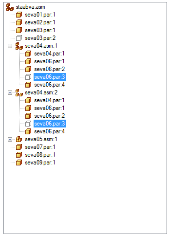

List Control tab (Parts List Properties dialog box)
When placing a parts list on an assembly drawing, you can use the List Control tab to specify the granularity of subassemblies and parts in the parts list. You also can control what is included in, or excluded from, the parts list.
The options on the List Control tab do not apply to a family of assemblies (FOA) parts list.
Parts list structure (left pane)
Displays the top-level assembly and all of the subassemblies and parts or components in it. This represents the structure and content of the parts list.
-
You can select an item in the parts list structure, and then use the options on the bottom-right side of the List Control tab to exclude it from the parts list.
-
Similarly, selecting options on the right side of the List Control tab affects the parts list structure on the left side.

The hide or show status of the model occurrences listed in the parts list structure pane is derived from the following columns in the Occurrence Properties dialog box in the Assembly environment. If the values are set to No, then the occurrences cannot be used in the Draft environment to generate a parts list or be shown in drawing views.
-
Reports/Parts List
-
Drawing Views
Parts list type (top-right pane)
- Global
-
Specifies how the parts list is generated.
- Top-level list (top level and expanded components)
-
Specifies that only the top-level assembly is searched to build the parts list. If the top-level assembly contains subassemblies, each subassembly will be listed in the parts list, but the parts within the subassemblies will not be listed.
When this option is set, you can use the Subassemblies options to specify how the parts in individual subassemblies are counted.
In the resulting table, the quantity for each occurrence is the total number of times the subassembly is represented in the top-level assembly. This is multiplied by any user-defined quantity overrides specified in the Occurrence Properties dialog box.
Example:Assume that in assembly top_explode_lbn.asm, you open the Occurrence Properties dialog box for the subassembly A1_explode_lbn.asm and set User-Defined=Yes and Quantity=2.
On the List Control tab (Parts List Properties dialog box), when you select a Top-level list (top-level and expanded components) parts list for this assembly structure, the quantity override is shown at the subassembly level, A1_explode_lbn.asm.

Item Number
File Name
Quantity
1
Part1_explode_lbn.par
1
2
A1_explode_lbn.asm
2
3
a2_explode_lbn.asm
1
4
Part2_explode_lbn.par
1
- Atomic list (all parts)
-
Specifies that subassemblies are searched when building the parts list. If the top-level assembly contains subassemblies, the parts in the subassemblies are included in the parts list, but the subassemblies are not listed.
In the resulting table, the quantity for each part or component occurrence is the total number of times the item is represented in the assembly, multiplied by any user-defined quantity overrides specified in the Occurrence Properties dialog box.
Example:Assume that in assembly top_explode_lbn.asm, you open the Occurrence Properties dialog box for the subassembly A1_explode_lbn.asm and set User-Defined=Yes and Quantity=2.
If you select an Atomic list (all parts and subassemblies) parts list for this assembly structure, the quantity override is shown at the component level in A1_explode_lbn.asm.

Item Number
File Name
Quantity
1
Part1_explode_lbn.par
1
2
hanger_explode_lbn.par
4
3
Part2_explode_lbn.par
3
4
Part3_explode_lbn.par
2
5
Part4_explode_lbn.par
3
6
Part5_explode_lbn.par
1
7
Post_explode_lbn.asm
1
8
Part6_explode_lbn.asm
1
9
Part7_explode_lbn.par
1
10
Part8_explode_lbn.par
1
- Exploded list (all parts and subassemblies)
-
Displays an exploded assembly structure in the parts list. Use this option when you want to show all parts, subassemblies, and subassembly parts in the parts list.
In the resulting table, item quantities are based on ownership. A part may be listed multiple times in the list, once for each subassembly where it is used. The quantity shown in each row is the number of times the item is used by its owner.
- Use level based item numbers
-
When checked, displays level-based item numbers based on ownership within the assembly structure. Each unique subassembly is an owner, and the parts and subassemblies under it receive item numbers based on its level, for example, 1, 1.1, 1.2, 1.3, 2, 3.
You can indent level-based item numbers using the Data alignment option on the Columns page.
Note:Any item may be owned by many different subassemblies. In this case, the same item may receive a different number.
When unchecked, displays flat list item numbers. Flat-list item numbers do not indicate ownership.
Example:For the level-based item numbers 1, 1.1, 1.2, 1.3, 2, 3, the flat list equivalent is 1, 2, 3, 4, 5, 6.
- Multiply by subassembly count
-
Calculates the exploded parts list quantity by multiplying each occurrence in a subassembly by the subassembly quantity.
- Show top assembly in list
-
Inserts a row in the parts list for the top-level assembly name.
- Expand weldment subassemblies
-
Controls how weldment assemblies are treated in a parts list. When you set this option, the parts in a weldment assembly are included in the parts list. When you clear this option, a weldment assembly is treated as a single component. Some companies treat a weldment assembly as a single component for parts list purposes.
- Use simplified assemblies
-
Specifies that you can select simplified assemblies to generate the parts list rather than the full assembly. A simplified assembly cannot be expanded to show its components.
Use this option to minimize the number and size of files that are needed to produce the parts list.
When this option is cleared, all of the files associated with the full assembly are downloaded to the local operating system.
Note:-
If you change the option from selected to cleared, and if additional files are needed to generate a parts list of the full assembly, then a message box prompts whether you want to download the additional files. You can download the files by selecting OK or Apply, and then updating the parts list.
-
The simplified assembly has to exist in the top-level assembly for you to generate a parts list using simplified parts.
For more information, see Simplifying assemblies and Create a simplified version of an assembly.
-
Include and exclude options (bottom-right)
- Configuration
-
Specifies an assembly display configuration to control what is displayed in the parts list. Selecting a predefined assembly configuration sets options for how subassemblies are treated in the parts list, what is included and excluded, what is shown or hidden.
The default is No selection.
- Selected item
-
Specifies whether the selected part or subassembly is included in the parts list. This setting applies to all FOA members in a FOA parts list.
The symbol adjacent to the part or subassembly changes color to indicate whether it is included or excluded.
Items that are excluded are not counted when using item-level numbering.
- Include
-
Specifies that the part or assembly is included in the parts list.
- Exclude
-
Specifies that the part or assembly is excluded from the parts list.
- Subassemblies
-
Controls how subassemblies are counted in the parts list.
- Include assembly as single item
-
Specifies that the selected subassembly is counted as one unit in the parts list.
Note:Selecting this option affects every instance of the subassembly, at whatever level it occurs. This is different than excluding a subassembly, which applies only to identical instances of the ownership structure of the selected subassembly.
- Include assembly components
-
Specifies that the individual components in the selected subassembly are itemized and counted in the parts list.
- Include all ballooned parts in all drawing views
-
Specifies that all parts that are ballooned are included in the parts list.
- Exclude parts hidden in all drawing views
-
Specifies that all hidden parts are excluded from the parts list. Also applies to parts that were hidden by clearing the Show option on the Display page of the Drawing View Properties dialog box.
Note:If a part is shown in any drawing view on any sheet, then it will not be excluded using this option.
- Exclude parts marked as reference in all drawing views
-
Specifies that all reference parts are excluded from the parts list. Reference parts are parts marked as reference on the Display tab of the Drawing View Properties dialog box.
- Restore defaults
-
Resets the exclusion options on this tab. You may want to use this button to restore the default parts list granularity settings when you have made changes using the options in the Selected Item and Subassemblies sections.